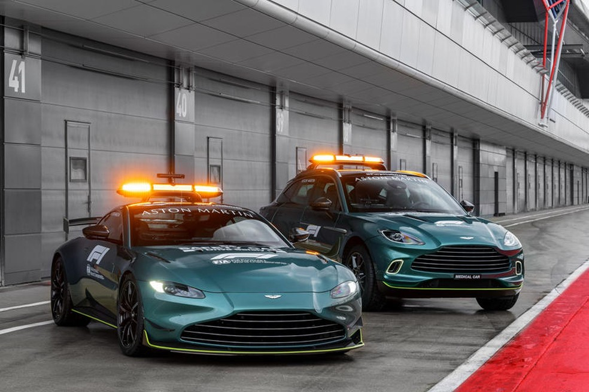

Aston Martin revela imagens do novo safety car da Fórmula 1
Empresa se revezará com Mercedes no fornecimento dos carros de segurança e medico da categoria em 2021
Fornecedora exclusiva do safety car e do carro médico desde 1996, a
Mercedes terá a Aston Martin como parceira em 2021. E com a
temporada da Fórmula 1 prestes a começar, a marca britânica
apresentou nesta sexta-feira os modelos que servirão de carro
de segurança e carro médico e que farão sua estreia já na primeira corrida
do ano, dia 28 de março, no Barein.

Safety car (carro de segurança): para a tarefa de guiar os bólidos da F1
em alta velocidade para que os pneus dos monopostos não percam
temperatura, a Aston selecionou o modelo "Vantage", que conta com um
motor V8 4.0 biturbo capaz de produzir 528 cv e acelerar de 0 a 100 km/h
em 3s5. Além de suspensão e sistema de direção terem sido adaptados
para aguentar o tranco, o modelo recebeu uma asa traseira para
produzir pressão aerodinâmica e manter o veículo grudado na pista nas curvas.
.jpg)
Medical car (carro médico): já para essa missão, a marca escolheu o
"DBX", um SUV que também conta com o motor V8 4.0 biturbo, mas que
gera um pouco mais de potência, com 541 cv. A máquina conta ainda
com extintores, desfibrilador, além de um kit de primeiro socorros para
queimaduras.

As empresas dividirão pela metade o fornecimento dos veículos, que
servirá como alívio financeiro para a companhia alemã por causa do
gigante calendário de 23 corridas do ano que vem. A projeção seria de 11
corridas com os carros Mercedes e 12 com os carros da Aston Martin.
Ao mesmo tempo, a jogada é vista como um plano de Lawrence Stroll,
magnata canadense e pai do piloto Lance, para usar a plataforma da F1
com o intuito de aumentar as vendas dos carros de rua da marca
britânica em mercados de maior interesse. Vale lembrar que a Aston que
também está na categoria como equipe após assumir a estrutura da
Racing Point.
A estratégia também faz parte da união cada vez maior entre as duas
equipes, já que a Mercedes está aumentando para 20% a propriedade
em ações da Aston, fornecendo em troca tecnologias na área de motor e
sistemas elétricos e eletrônicos. Além disso, Toto Wolff possui ações da
empresa britânica e um forte laço de amizade com Stroll, o que
justificaria parte da manobra.